LEVEL 5 ADVANCED MODELS ／ PURCHASE PRICE ALLOCATION & INTANGIBLE VALUATION
PURCHASE PRICE ALLOCATION & INTANGIBLE VALUATIONLEVEL 5プラチナ限定
買収対価を配分し、顧客関係・商標・技術を評価し、のれんと買収後財務諸表へ反映する。
まず無料で試せます。無料会員登録で、Excel Starter Pack（3表連動・DCF・LBO・M&Aなど9ブック54シート）と、1日1通のメール講座「7日間ファイナンス講座」を受け取れます。
登録無料・クレジットカード不要PPA（取得対価配分）の全工程をExcelで学ぶ実践講座です。アサナギ電機（架空・上場）による株式会社ミナモ計装（架空・非上場）の株式70%追加取得を総合ケースに、取得対価の整理、買収前BSから買収後BSへの組替え、Relief from Royalty法とMPEEMによる無形資産評価、貢献資産チャージ、税務償却便益、繰延税金、のれん、償却スケジュール、EPSへの影響までを一つのモデルで構築します。
- 取得対価を分解し、EV・株式価値・引受債務と区別する現金・株式・条件付対価（シナリオ期待値の割引）・既保有持分の再測定・非支配持分を取得対価シートで整理し、EVブリッジで株式価値と企業価値を区別します。取得関連費用は対価に含めません。
- 無形資産を4つの手法で評価し、CACとWARAで整合を確かめる商標はRelief from Royalty法、顧客関係はMPEEM（既存顧客売上の減耗・貢献資産チャージ・残存価値・TAB）、技術は残存率付きRFR、競業避止契約はWith and Without、集合的労働力はコストアプローチ。資産別の要求収益率の加重平均（WARA）がWACCと整合することを確認します。
- 繰延税金・のれん・償却・買収後BS・EPSまで接続する時価評価差額に係る繰延税金負債、部分のれんと全部のれん、日本基準・IFRS・US GAAPのスイッチ、15年の償却スケジュール、取得日の連結BS、取得後1年目のEPSアクリーション／ダイリューションと調整後EPS、感応度3表、整合性チェック16項目まで一つのExcelで完成させます。
この講座はプラチナプランに含まれます。単品販売は行っていません。
すでにプラチナプランをお持ちの方は、ログインするとこのページからダウンロードできます。
What it solves
「のれんはいくらか」ではなく、「何にいくら配分し、その後の利益がどう変わるか」を説明できるようにする。
PPAは買収価格の妥当性ではなく、買収後の貸借対照表と損益計算書を決める作業です。次のような場面で、監査人や経営陣に根拠のある説明ができるようになることを目標にしています。
- 現金対価だけを取得原価とし、株式対価・条件付対価の時価・既保有持分の再測定を見落とす
- EVと株式価値、引受債務と取得対価を混同し、のれんの残余計算がずれる
- 顧客関係・商標・技術をまとめて「無形資産」と置き、評価手法と貢献資産チャージの整合を説明できない
- MPEEMで新規顧客の売上まで既存顧客に含める、または技術のチャージを二重に控除する
- 株式取得なのに税務上の償却便益（TAB）の適用可否を検討せず、繰延税金負債をのれんにも計上する
- 日本基準ののれん償却でEPSが希薄化する理由と、IFRS・US GAAPで結果が変わる理由を区別できない
What's included
教材に含まれるもの
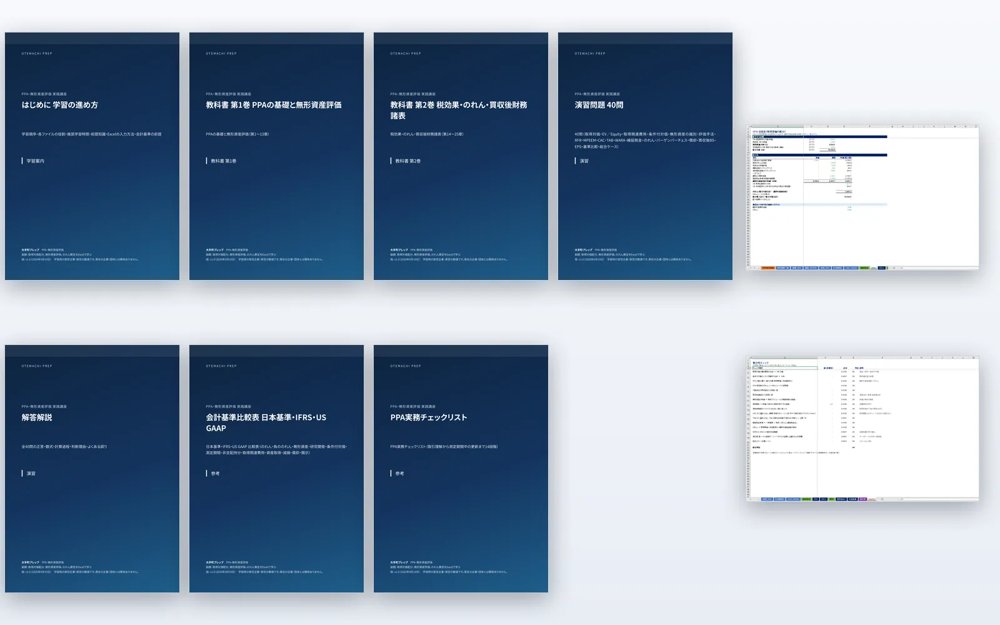
はじめに・学習の進め方（PDF）
学習順序、各ファイルの役割、推奨学習時間、前提知識、Excelの入力方法と色分け、会計基準の前提と確認日、個別案件では専門家確認が必要であること。
教科書 第1巻 PPAの基礎と無形資産評価（PDF・第1〜13章）
PPAの全体像、企業結合と資産取得、取得企業・取得日・取得対価、買収前BSから買収後BSへの組替え、運転資本・棚卸資産・有形固定資産の時価評価、無形資産の識別、評価手法の選択、Relief from Royalty法、MPEEM、With and Without Method、コストアプローチ、Contributory Asset Charges。
教科書 第2巻 税効果・のれん・買収後財務諸表（PDF・第14〜25章）
Tax Amortization Benefit、WARAと無形資産別割引率、繰延税金、条件付対価、のれん、バーゲンパーチェス、償却スケジュール、買収後財務諸表、EPS・アクリーション／ダイリューション、日本基準・IFRS・US GAAP比較、PPA実務の進め方、総合ケーススタディ。
PPAモデル Blank・完成版（Excel・23シート）
前提（会計基準・TABスイッチ）／取得対価／対象BS／時価調整／棚卸資産／有形固定資産／無形資産一覧／商標_RFR／顧客_MPEEM／技術_RFR／その他無形／CAC_WARA／繰延税金／PPA／のれん／償却／買収後BS／利益影響／感応度／チェック。Blankは学習対象セル（数式）だけを空欄にし、入力セルと見出しは残しています。
演習問題 40問（PDF）
取得対価の算定、EVとEquity Valueの区別、取得関連費用、条件付対価、無形資産の識別、評価手法の選択、RFR、MPEEM、CAC、TAB、WARA、繰延税金、のれん、バーゲンパーチェス、償却スケジュール、買収後BS、利益・EPSへの影響、会計基準比較、総合ケース（計算・Excel24問／概念5問／判断9問／誤り発見2問）。
解答解説（PDF）
全40問の正答に加え、数式、計算過程、判断理由、よくある誤りを記載。判断問題は満たすべき条件と許容される別解を示します。
会計基準比較表・PPA実務チェックリスト（PDF・2点）
のれん・負ののれん・無形資産・研究開発・条件付対価・測定期間・非支配持分・取得関連費用・資産取得・減損・償却・開示の12論点を日本基準・IFRS・US GAAPで比較（出典付き）。チェックリストは取引理解から測定期間中の更新まで14段階の確認項目・必要資料・よくある不備。
What you can build
完成すると、この状態まで作れる。
完成版Excelと教科書の実画面です。企業・数値・資料はすべて架空の教育用ケースで、数式や解答が読み取れる画面は掲載していません。
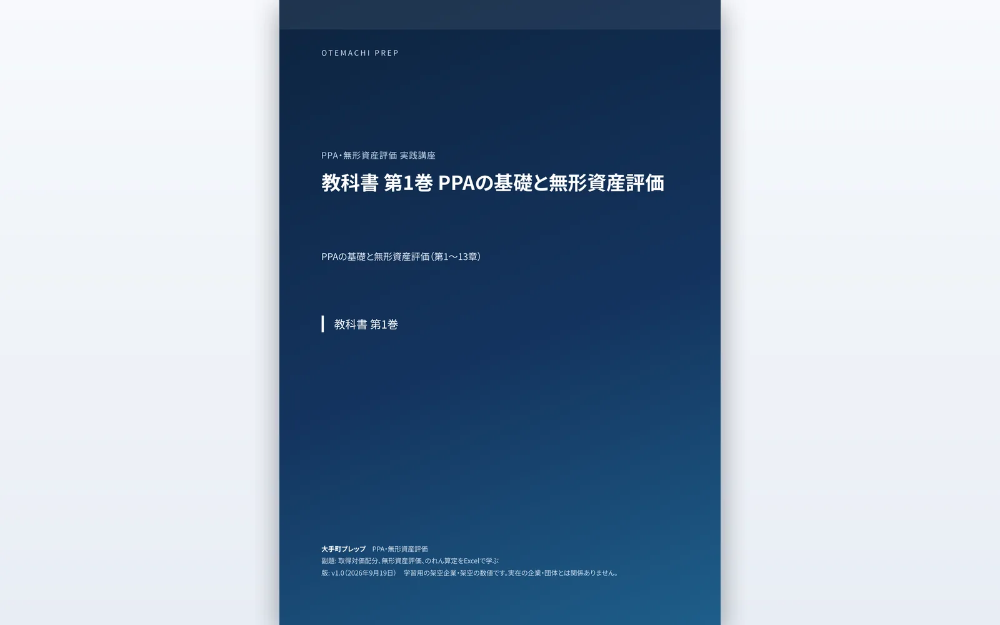
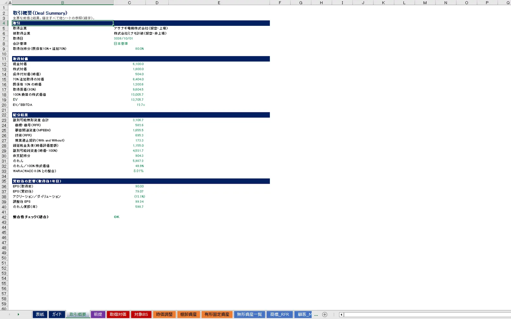
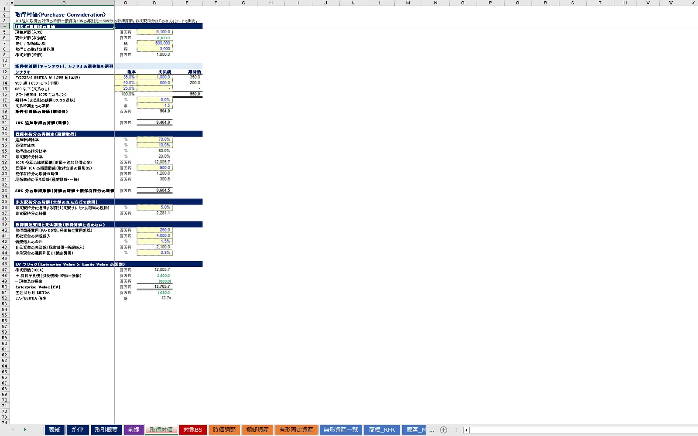
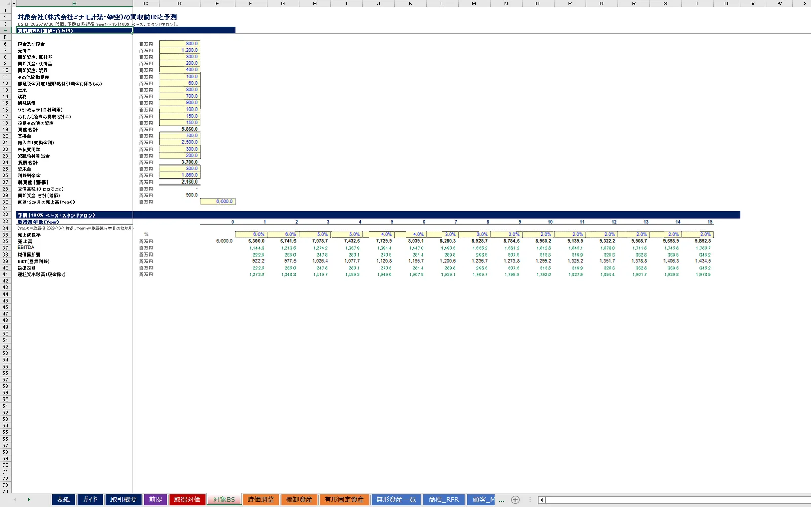
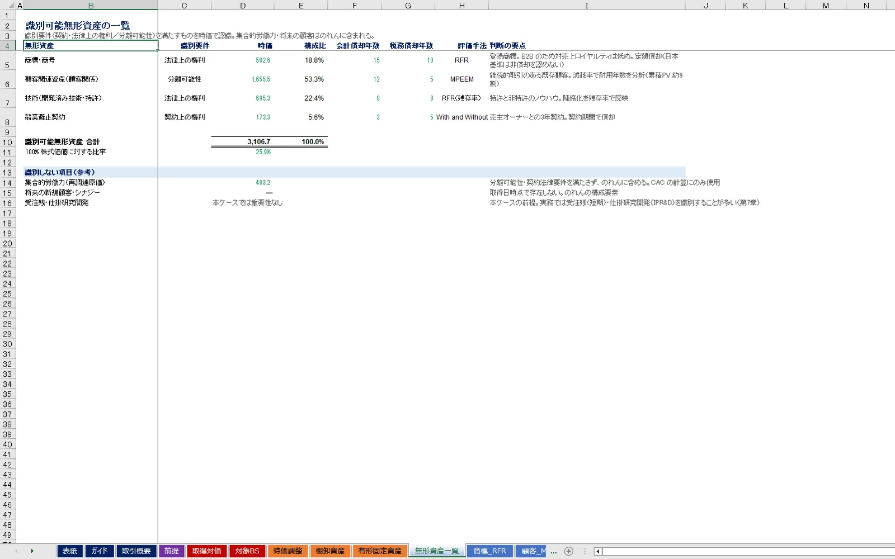
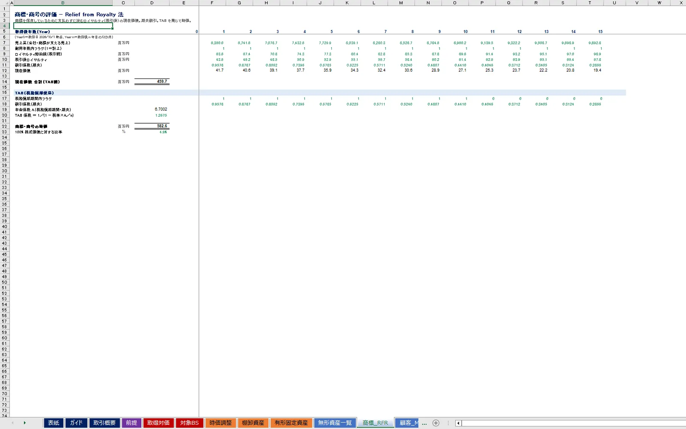
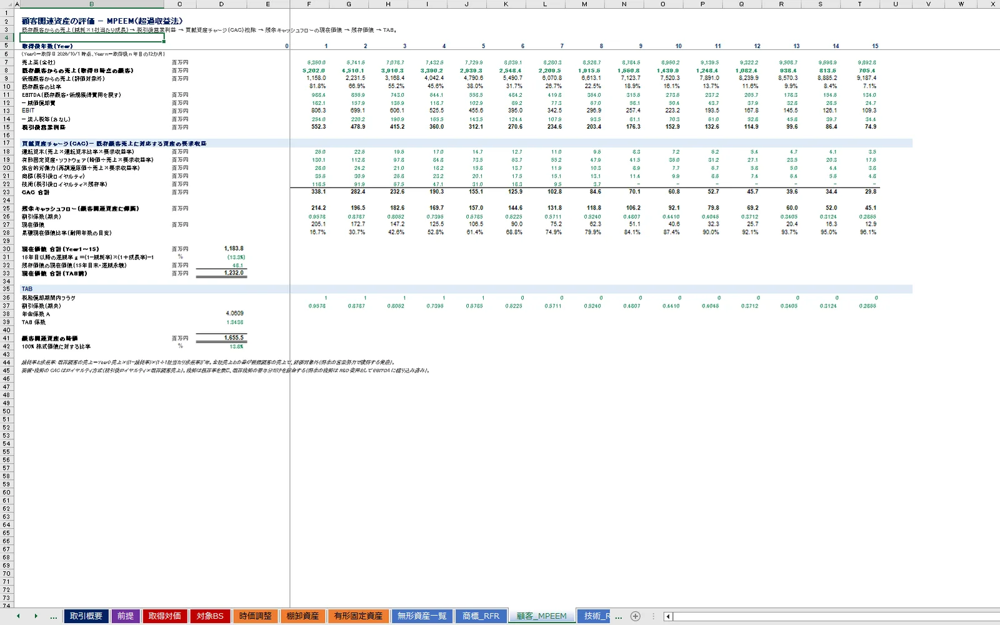
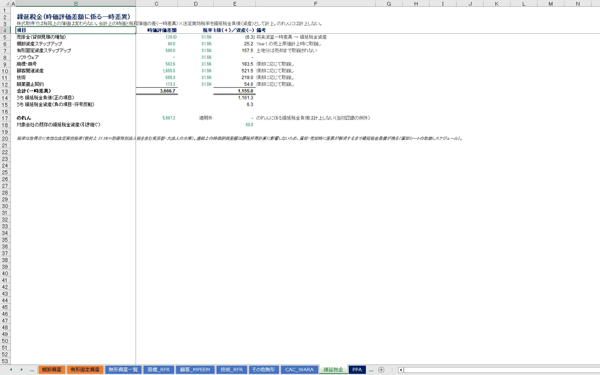
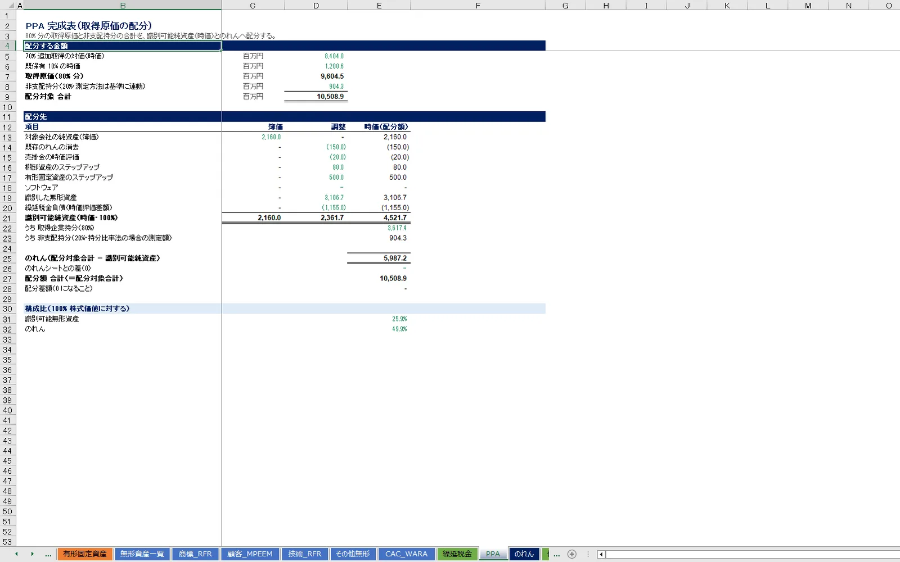
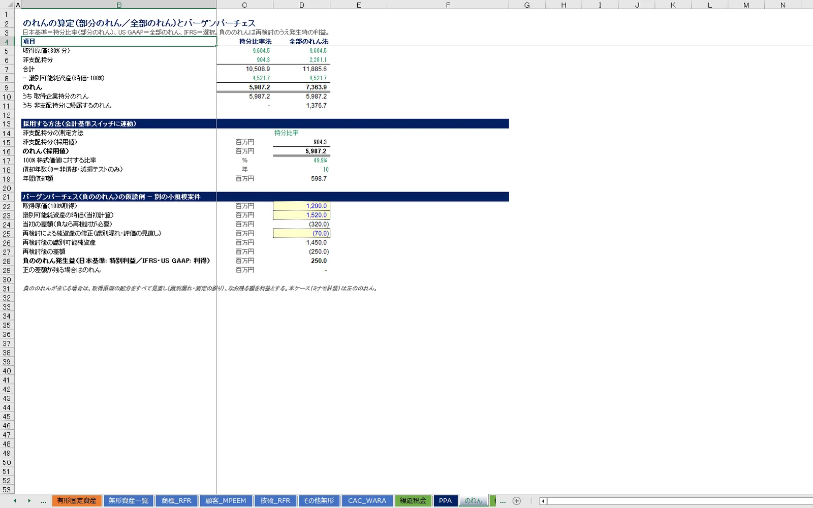
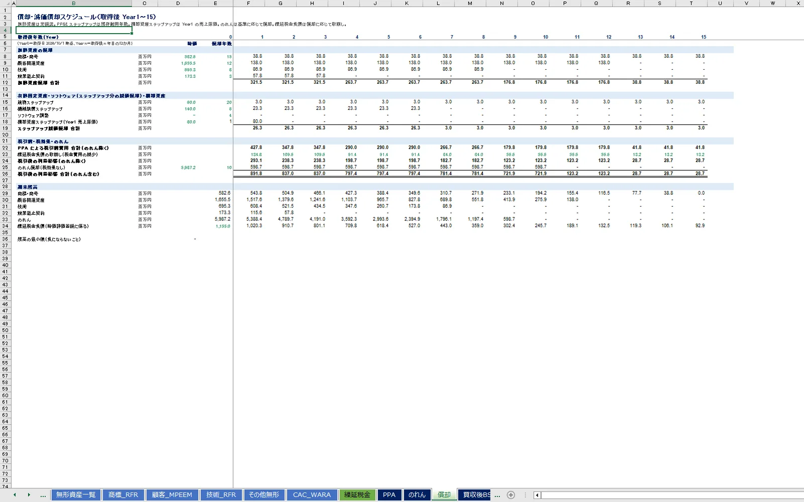
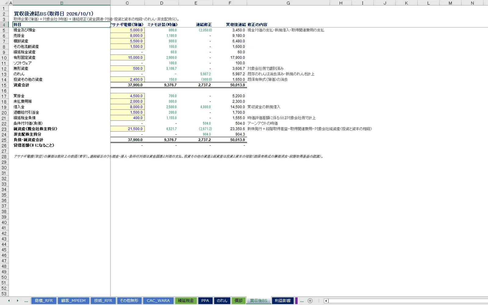
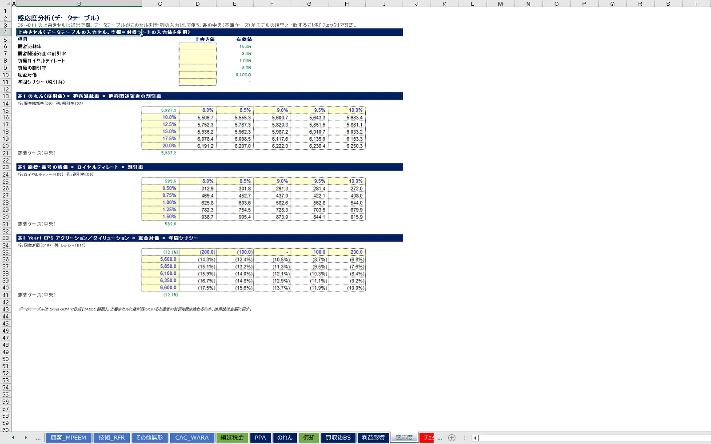
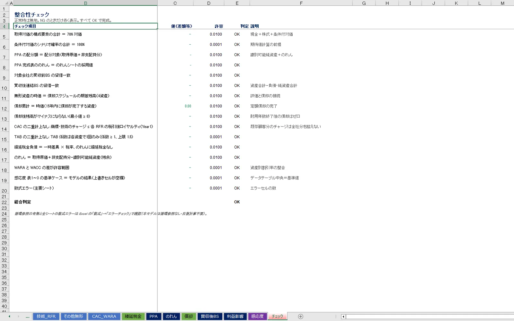
How to learn
学習ステップ
教科書 第1巻でPPAの骨格と無形資産評価を学ぶ
第1〜8章でPPAの全体像、企業結合と資産取得、取得対価、BSの組替え、時価評価、無形資産の識別と手法選択を、第9〜13章でRFR・MPEEM・With and Without・コストアプローチ・CACを学びます（Q01〜Q20）。
PPAモデル_Blankを章ごとに埋める
取得対価→対象BS→時価調整→棚卸資産・有形固定資産→商標_RFR→顧客_MPEEM→技術_RFR→その他無形→CAC_WARA の順に、教科書の「Excelでの実装」ボックスの数式を入力します。
教科書 第2巻で税効果・のれん・買収後財務諸表へ進む
第14〜19章でTAB・WARA・繰延税金・条件付対価・のれん・バーゲンパーチェスを、第20〜22章で償却・買収後BS・EPSを学びます（Q21〜Q36）。
繰延税金→PPA→のれん→償却→買収後BS→利益影響を完成させる
チェックシート16項目がすべてOKになるまで直します。会計基準スイッチとTABスイッチを切り替え、結果の違いを確認します。
基準比較と実務の進め方を確認する
第23〜24章と会計基準比較表・実務チェックリストで、3基準の違い、監査対応、開示、測定期間中の更新を整理します（Q37〜Q38）。
総合ケースと演習で仕上げる
第25章で全工程を通しで再構成し、Q39〜Q40（TAB除外・感応度・監査人への説明）で監査可能な形で説明する練習をします。
Curriculum
カリキュラム（2巻・全25章）
各章に、判断場面、到達目標、なぜその処理を行うのか、数式と各変数の意味、使用する前提、実務上の判断、Excelでの実装、会計上の影響、よくある誤り、チェック方法、章末演習を置いています。会計基準の記述は2026年9月19日時点の一次資料を確認し、出典を付しています。
第1巻 第1〜4章：PPAの全体像と取得対価PPAの全体像／企業結合と資産取得／取得企業・取得日・取得対価（EV・株式価値・引受債務・条件付対価・段階取得）／買収前BSから買収後BSへの組替え
第1巻 第5〜8章：時価評価と無形資産の識別運転資本・棚卸資産の時価評価／有形固定資産の時価評価／無形資産の識別（5分類・識別要件・IPR&D・受注残）／評価アプローチと評価手法の選択
第1巻 第9〜13章：無形資産評価モデルRelief from Royalty法／MPEEM／With and Without Method／コストアプローチ／Contributory Asset Charges
第2巻 第14〜19章：TAB・WARA・繰延税金・のれんTax Amortization Benefit／WARAと無形資産別割引率／繰延税金／条件付対価／のれん（部分・全部）／バーゲンパーチェス
第2巻 第20〜25章：買収後財務諸表・基準比較・実務・総合償却・減価償却スケジュール／買収後財務諸表／EPS・アクリーション／ダイリューション／日本基準・IFRS・US GAAP比較／PPA実務の進め方／総合ケーススタディ
Who it's for
こんな方に向いています
- 投資銀行・FASでM&Aに携わり、買収後の会計処理まで含めて案件を説明したい方
- PEファンドで投資先の買収会計（PPA・のれん・償却負担）とEPS・利益への影響を理解したい方
- 事業会社でM&A・経理・財務・経営企画を担当し、監査人や評価専門家との協議に備えたい方
- 監査法人・会計士・M&Aアドバイザーで、無形資産評価モデルの構造とチェック方法を押さえたい方
- 無形資産評価モデル（RFR・MPEEM・CAC・TAB・WARA）をExcelで組めるようになりたい方
- M&Aモデル（LBO・合併モデル）から買収会計へ学習範囲を広げたい方、買収後の会計処理を理解したい経営者
M&A実務・投資側の方へ
- 取得対価をEV・株式価値・引受債務・条件付対価・既保有持分に分解し、100%換算とEVブリッジで整理できる
- 無形資産の識別と評価手法の選択を説明し、CACとWARAで割引率の整合を確認できる
- 日本基準ののれん償却がEPSを希薄化する仕組みと、IFRS・US GAAPで結果が変わる理由を説明できる
経理・財務・監査対応の方へ
- 時価評価差額に係る繰延税金負債を計算し、のれんに税効果を認識しない理由を説明できる
- PPA完成表・償却スケジュール・買収後BSを作成し、配分差額0・貸借一致・残高非負をチェックで示せる
- TABの適用可否、耐用年数、割引率、ロイヤルティレートなど判断を要する論点を、根拠資料とともに監査人へ説明できる
Original design
「概念の解説」ではなく、「取得対価から買収後EPSまで一つの計算でつなぐ」設計。
取得対価→時価調整→無形資産評価→CAC・WARA→繰延税金→PPA→のれん→償却→買収後BS→EPSを一つのExcelで接続し、会計基準スイッチで日本基準・IFRS・US GAAPの違いを同じケースで確認できる、大手町プレップのオリジナル教材です。
- 取得対価
- 時価調整
- 無形資産評価
- CAC・WARA
- 繰延税金
- のれん
- 償却・買収後BS
- EPS影響
既存顧客と新規顧客を分ける
MPEEMの既存顧客売上は「Year0売上×((1−減耗率)×(1＋成長率))^年」で作り、全社売上との差を新規顧客売上として評価対象から外します。減耗率と成長率を単純に足し引きしません。
CACは二重に引かない
MPEEMはEBITDAから減価償却を控除してEBITを出すため、有形固定資産のチャージは要求収益（return on）のみ。商標・技術のチャージはRFRと同じ税引後ロイヤルティで課金し、技術は既存技術の残存率を乗じます。チェックシートで上限を検証します。
TABは各資産に1回・スイッチで外せる
税務償却年数（商標権・特許権・資産調整勘定相当）ごとに年金係数からTAB係数を計算。株式取得における適用可否の両論を教科書で整理し、前提シートのスイッチで適用しない場合の無形資産・のれん・EPSを比較できます。
のれんは残余として1か所で決める
80%分の取得原価＋非支配持分−識別可能純資産（時価）。持分比率法と全部のれん法を並べ、会計基準スイッチが採用値と償却年数を決めます。PPA完成表の配分差額は常に0で検証されます。
繰延税金は項目別に、のれんには付けない
売掛金・棚卸資産・有形固定資産・無形資産4種の一時差異×法定実効税率（防衛特別法人税を含む31.5%を教材上の仮定として明示）。償却に応じた取崩しが償却スケジュールに接続します。
EPSは報告値と調整後を並べる
日本基準ののれん償却・無形資産償却・棚卸資産ステップアップを含む報告EPSと、それらを除いた調整後EPSを同時に表示。感応度（現金対価×シナジー）で判断の余地を確認します。
Quality
教材の品質について
Excel完成版を実機で再計算・整合性チェック全項目OK
PPAモデル（完成版・Blank）を Windows 版 Microsoft Excel で全再計算し、数式エラー0・循環参照0・外部リンク0・マクロ不使用。感応度のデータテーブル3表も実機で作成しています。
独立検算
Excelとは別に組んだ計算で完成版の全1,637セル（取得対価・時価調整・4資産の評価・CAC・WARA・繰延税金・PPA・のれん・償却・買収後BS・利益影響・感応度）を照合し、不一致0を確認しています。
教科書・演習・解答の数値はExcelと同じ計算から生成
本文・演習・解答の数値は完成版Excelと同じ計算から出力し、セル番地とともに管理しています。
架空ケースと基準・税務の出典を区別
アサナギ電機・ミナモ計装はいずれも架空です。企業結合会計基準・適用指針、IFRS 3・IAS 38・IAS 36・IAS 12、ASC 805・350・820・740、法人税法・耐用年数省令などは2026年9月19日時点の一次資料を確認し、確認日と出典を付しています。ロイヤルティレート・減耗率・割引率・耐用年数・税率は学習用の仮定であり、個別案件では会計監査人・評価専門家・税務専門家の確認が必要です。
FAQ